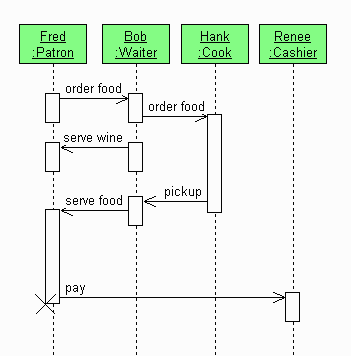

Sequence diagrams |
|
|
Меню:
|
Диаграмма последовательности (англ. sequence diagram) - диаграмма, на которой
показаны взаимодействия объектов, упорядоченные по времени их проявления.
Используется в языке UML.
Основными элементами диаграммы последовательности являются обозначения объектов (прямоугольники), вертикальные линии (англ. lifeline), отображающие течение времени при деятельности объекта, и стрелки, показывающие выполнение действий объектами. На данной диаграмме объекты располагаются слева направо. Ее недостатком является то, что она занимает много места.  |